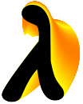

Scheme and Functional Programming 2006
in Portland OR, affiliated with
ICFP 2006
Important Dates

report
|
schedule
|
dates
|
call for papers
|
organizers
|
other years
Workshop
Sunday September 17, the day before
ICFP
Final versions due
Friday August 11
Author notification
Friday June 30
Submission deadline
Friday June 9